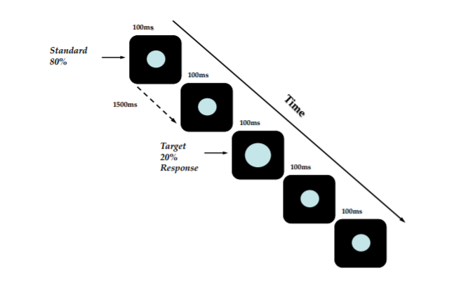
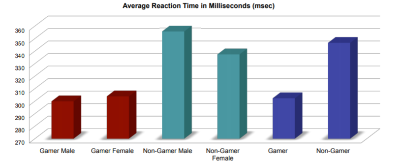

Modern video games require a large amount of a4ention and working memory resources to successfully maneuver through virtual environments. Previous research has demonstrated video game players outperform non-video game players on measures of basic a4ention and performance (Boot et al., 2008). A gamer is defined as an individual who played 4+ hours of video games a week (Green & Bavelier, 2007).
Additional analysis evaluated group differences between male and female participants. Results indicate significant group differences between individuals meeting criteria for video game player status and non-gamers, but no group differences between male and female.
